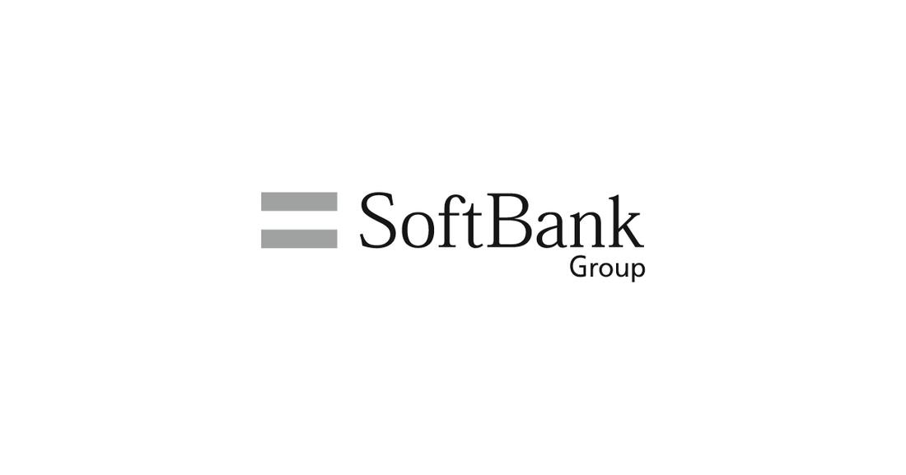

SoftBank, Grab and PETROS Commit $1.85B to Build Malaysia AI Infrastructure
SoftBank Group and Grab signed joint development agreements with PETROS on November 9, 2026, with plans for US$1.85 billion in initial combined seed capital to build AI infrastructure across Sarawak and Peninsular Malaysia, targeting five gigawatts or more of AI compute capacity, deployed in stages against milestones.

- 01THE ANNOUNCEMENT — On November 9, 2026, SoftBank Group and Grab signed joint development agreements with PETROS for US$1.85 billion in proposed initial combined seed capital to build AI infrastructure in Malaysia.
- 02THE SPLIT — The Sarawak project carries US$1 billion (SoftBank Group US$800 million, Grab and PETROS US$100 million each) and the Peninsular Malaysia project US$850 million (Grab US$650 million, SoftBank Group US$200 million), with a long-term target of five gigawatts or more of AI compute capacity.
- 03THE WATCHPOINT — Whether the staged capital is released against real milestones, whether a hyperscaler customer signs, and whether the joint venture entities are formed on definitive agreements.
WHAT HAPPENEDWhat Happened
SoftBank Group Corp. and Grab Holdings Ltd. signed joint development agreements with Petroleum Sarawak Berhad (PETROS) on November 9, 2026, with plans for US$1.85 billion in initial combined seed capital to build AI infrastructure across Sarawak and Peninsular Malaysia. SoftBank Group will contribute US$1 billion, Grab US$750 million and PETROS US$100 million, under a multi-year plan targeting five gigawatts or more of AI compute capacity.
The Sarawak project carries a proposed initial investment of US$1 billion, comprising US$800 million from SoftBank Group and US$100 million each from Grab and PETROS, building on a framework agreement the three parties signed in Kuching on October 8, 2026. SoftBank Group will be the majority shareholder, with Grab holding an option to raise its stake. The Peninsular Malaysia project carries US$850 million in proposed seed capital, US$650 million from Grab and US$200 million from SoftBank Group, with Grab as founding shareholder leading development.
The capital will be deployed in stages as projects hit development and customer-contract milestones, and the parties will seek additional investors and hyperscaler customers. Once fully operational, the facilities are expected to be among the largest AI infrastructure of their kind in Asia, serving governments, multinational companies and small businesses. Grab co-founder and CEO Anthony Tan will oversee both projects, and SoftBank Group has agreed in principle to a five-year lock-up on Grab shares held directly by a SoftBank Group entity.
WHY IT MATTERSSoutheast Asia's compute gap is the pitch
SoftBank Group framed the deal around demand, not supply: research by Google, Temasek and Bain & Company puts per-capita AI usage across Southeast Asia's six largest economies at around one-tenth of the level in the United States, with regional usage projected to scale by up to 60-fold by 2030. The consortium is betting that gap becomes a build-out, and that Malaysia, with Sarawak energy and federal backing, is where it lands.
The projects align with Malaysia's National AI Action Plan 2026-2030 and Sarawak's Post COVID-19 Development Strategy 2030, and the facilities are to run under Malaysia's renewable energy use guidelines with high-efficiency infrastructure designed to reduce water use and reliance on local power grids. The political cover is explicit: the announcement was welcomed by Prime Minister Anwar Ibrahim, and the parties say they will work closely with the federal and Sarawak governments.
WHY IT MATTERSThe money is staged, and the paperwork is not finished
The headline number needs reading in full. The US$1.85 billion is proposed seed capital released in tranches against milestones, and the joint venture entities themselves do not yet exist: formation and final investment terms remain subject to definitive agreements. The binding part of the joint development agreements is the obligation to develop and fund on the agreed terms, not a completed capital commitment.
That structure is normal for infrastructure of this size, and it sets the real watchpoint. The test is not the signing ceremony but the first tranche: land secured, power contracted, a hyperscaler customer signed. Until those milestones arrive, the five-gigawatt target is an ambition with a press release, not a build.
SIGNAL JUDGMENT — ANALYSISA $1.85B bet that Southeast Asia's AI demand becomes a build-out
Tokenta Signal's judgment: The deal is best read as a land grab for Southeast Asia's compute future, not a data center opening. SoftBank Group brings the balance sheet, Grab brings the regional operating footprint and the government relationships, PETROS brings Sarawak energy, and the five-gigawatt target puts the ambition among Asia's largest. The structure tells the rest of the story: staged money, milestones before tranches, joint ventures still to be formed. The announcement is real and the parties are serious, but the build has not started. Watch for the first hyperscaler customer and the first tranche release; those are the events that turn a signing into infrastructure.
WHAT REMAINS UNCERTAINWhat Remains Uncertain
EVIDENCEEvidence
SoftBank Group's official November 9, 2026 press release: SoftBank Group and Grab, together with PETROS, announce plans for US$1.85 billion in initial combined seed capital to build AI infrastructure across Sarawak and Peninsular Malaysia, with a long-term target of five gigawatts or more of AI compute capacity. The Sarawak project carries a proposed initial investment of US$1 billion, comprising US$800 million from SoftBank Group and US$100 million each from Grab and PETROS, building on a framework agreement signed in Kuching on October 8, 2026. The Peninsular Malaysia project carries US$850 million in proposed seed capital, US$650 million from Grab and US$200 million from SoftBank Group.
PRIMARY SOURCESPrimary Sources
- SoftBank Group (official press release): SoftBank Group and Grab Sign Joint Development Agreements to Develop AI Infrastructure in Malaysia
https://group.softbank/en/news/press/20261109_0 - KLScreener: Softbank, Grab and PETROS lock in US$1.85 bil seed capital for AI infrastructure in Malaysia
https://www.klsescreener.com/v2/news/view/1824165/softbank-grab-and-petros-lock-in-us-1-85-bil-seed-capital-for-ai-infrastructure-in-malaysia
RELATEDRelated Intelligence
- OpenAI Launches ChatGPT Wallet, Letting Dots Agents Pay for Purchases
- Microsoft 365 Outage Passes 25 Hours as 17:57 UTC Update Says Underlying Issue Addressed
- Microsoft 365 Outage Passes 23 Hours as 15:56 UTC Update Focuses on Residual Impact
- Microsoft 365 Outage Passes 22 Hours as 14:56 UTC Update Reports Sustained Improvements